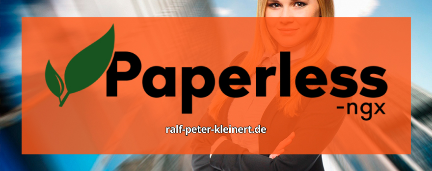

Die Digitalisierung des Büros ist für viele Menschen ein großer Schritt in Richtung mehr Effizienz. Wer auf Papier verzichten möchte, benötigt eine Software, die Dokumente organisiert und verwaltet. Genau hier kommt Paperless ins Spiel. Die Open-Source-Lösung ermöglicht das automatische Sortieren und Durchsuchen von Dokumenten mithilfe von KI. In diesem Artikel zeige ich, wie Paperless in Docker auf einem Linux-System wie Debian oder Linux Mint installiert und betrieben werden kann.
Ich habe verschiedene Szenarien getestet und die Installation für Debian- und Ubuntu-basierte Systeme optimiert. Das Vorgehen ist so einfach wie möglich gehalten: Wer einen Linux-Rechner nutzt, kann die nachfolgenden Schritte von oben nach unten ausführen und hat am Ende ein laufendes System.
Paperless verwendet eine KI-gestützte Texterkennung (OCR), um eingescannte Dokumente automatisch zu verschlagworten und zu kategorisieren. Das bedeutet, dass Rechnungen, Verträge und andere Schriftstücke schnell auffindbar sind, ohne manuell Ordnerstrukturen zu verwalten. Durch die Nutzung von Docker ist das System zudem leicht wartbar und kann bei Bedarf unkompliziert aktualisiert werden.
Die Vorteile eines papierlosen Büros liegen auf der Hand: weniger Chaos, schnellere Suche und eine digitale Ablage, die jederzeit und von überall zugänglich ist. Paperless bietet dabei eine vollständige Selbstverwaltung, ohne dass Daten in einer Cloud gespeichert werden müssen. Die Sicherheit bleibt in der eigenen Hand.
Nach der Installation steht eine webbasierte Benutzeroberfläche zur Verfügung, in der Dokumente hochgeladen, durchsucht und organisiert werden können.
Die Kombination aus Open Source, KI-gestützter Dokumentenerkennung und einfacher Handhabung macht Paperless zu einer attraktiven Lösung für alle, die Ordnung in ihr digitales Büro bringen wollen.
Inhalte des Artikels Paperless Docker Installation
Wichtige Information zu diesem Artikel
Es gibt nun eine neue Version der Software, die ich selbst entwickelt habe. Das Programm, welches Paperless-ngx jetzt auch auf Windows installieren, sichern, wiederherstellen und migrieren kann. Lesen Sie zum neuen Paperless Backup Programm diesen Artikel und holen Sie sich das Tool.
Paperless-ngx ist eine großartige Software, wenn es darum geht, Dokumente digital zu verwalten und mit einer KI automatisch zu sortieren. Doch ich rate ausdrücklich davon ab, Paperless im Internet zu betreiben. Warum? Weil Dokumente – egal ob privat oder geschäftlich – extrem sensible Daten enthalten und nicht unnötig einem Risiko ausgesetzt werden sollten.
Paperless ist eine Bürosoftware – nicht für das Internet gemacht
Paperless-ngx ist dafür gedacht, lokal auf einem Computer oder maximal im internen Netzwerk eines Büros zu laufen. Es ist keine klassische Cloud-Anwendung, die dafür entwickelt wurde, im Internet erreichbar zu sein. Wenn Sie versuchen, Paperless von außen zugänglich zu machen, müssen Sie sich über erhebliche Sicherheitsrisiken im Klaren sein.
Die technischen Herausforderungen bei einem Internet-Betrieb
Wer Paperless-ngx doch im Internet betreiben will, muss eine Reihe von Sicherheitsmaßnahmen treffen, die nicht trivial sind:
Langsame Übertragungen – ein weiteres Problem
Ein weiteres Argument gegen den Internet-Betrieb ist die Geschwindigkeit. Wenn große Mengen an Dokumenten hoch- und heruntergeladen werden, zieht sich das in die Länge. Lokal hingegen sind Dokumente sofort verfügbar, ohne dass eine Internetverbindung benötigt wird.
Die beste Lösung: Paperless lokal oder im Büro-Netzwerk betreiben
Wer Paperless-ngx sinnvoll nutzen will, sollte es lokal auf seinem Rechner oder einem kleinen Server im Büro-Netzwerk installieren. So bleiben die Dokumente sicher und die Software läuft stabil und schnell, ohne dass man sich mit komplizierten Sicherheitsmaßnahmen herumschlagen muss.
Paperless ist kein Cloud-Dienst und sollte auch nicht als solcher genutzt werden. Setzen Sie auf eine lokale Installation – das ist sicherer, schneller und verhindert unangenehme Überraschungen.
Ich beschäftige mich intensiv mit IT-Sicherheit – und das schon seit vielen Jahren. Genau deshalb werde ich keine Anleitung bereitstellen, die zeigt, wie man Paperless-ngx im Internet betreibt und von außen erreichbar macht. Warum? Weil ich es schlicht für keine gute Idee halte, sensible Dokumente unnötig einem Risiko auszusetzen.
Paperless-ngx ist eine Software für das papierlose Büro – eine Lösung, die auf einem lokalen Rechner oder im internen Netzwerk läuft. Es ist nicht dafür gedacht, über das Internet erreichbar zu sein, und das aus gutem Grund. In der Standardinstallation gibt es keine eingebaute Unterstützung für SSL-Verschlüsselung, was bedeutet, dass eine sichere HTTPS-Verbindung erst umständlich über einen Reverse Proxy eingerichtet werden müsste. Und selbst dann bleibt das System angreifbar, wenn nicht weitere umfassende Schutzmaßnahmen getroffen werden.
Ich sehe keinen Sinn darin, Menschen eine Anleitung in die Hand zu geben, mit der sie ihre vertraulichen Dokumente potenziell ungeschützt ins Internet laden. Die Risiken sind einfach zu hoch. Ein offenes Paperless-System im Netz wäre ein attraktives Ziel für Hacker, und wenn es nicht professionell abgesichert ist, könnten Angreifer Zugriff auf Rechnungen, Verträge oder andere persönliche Daten erhalten. Das ist eine Verantwortung, die ich nicht übernehme.
Wer Paperless nutzen möchte, sollte es lokal auf seinem Computer oder in einem sicheren, internen Netzwerk betreiben. Das ist nicht nur sicherer, sondern auch schneller und zuverlässiger. Alles andere ist ein unnötiges Sicherheitsrisiko, das niemand eingehen sollte.
Wer Paperless-ngx doch im Internet betreiben will, muss eine Reihe von Sicherheitsmaßnahmen treffen, die nicht trivial sind:
Auf meinem YouTube-Kanal haben einige User gefragt, ob ich die Installation von Paperless auf Proxmox zeigen kann. Das werde ich tun. Allerdings nicht, um Paperless im Internet zu betreiben. Das Video wird sich darauf konzentrieren, Paperless innerhalb eines Proxmox-Systems zu installieren, das entweder in einer Firma oder zu Hause läuft und über das lokale Netzwerk bereitgestellt wird.
Ich werde im Video ausdrücklich davon abraten, eine Paperless-Instanz im Internet zu betreiben. Jeder, der darüber nachdenkt, sollte sich sehr genau überlegen, ob es wirklich notwendig ist, seine Dokumente – oder noch schlimmer, Dokumente von anderen –, Verträge, Kontodaten und andere sensible Informationen einer solchen Gefahr auszusetzen. Es gibt keinen guten Grund, dieses Risiko einzugehen.
Lassen Sie es bleiben! Paperless gehört ins lokale Netzwerk und nicht ins Internet. Wer eine sichere und schnelle Lösung sucht, fährt mit einer lokalen Installation auf Proxmox deutlich besser.
Kostenlose IT-Sicherheits-Bücher & Information via Newsletter
Bleiben Sie informiert, wann es meine Bücher kostenlos in einer Aktion gibt: Mit meinem Newsletter erfahren Sie viermal im Jahr von Aktionen auf Amazon und anderen Plattformen, bei denen meine IT-Sicherheits-Bücher gratis erhältlich sind. Sie verpassen keine Gelegenheit und erhalten zusätzlich hilfreiche Tipps zur IT-Sicherheit. Der Newsletter ist kostenlos und unverbindlich – einfach abonnieren und profitieren!
Achtung
Achtung. Keine Garantie auf Vollständigkeit. Eingriffe an
Linux-Servern, können bei Unachtsamkeit oder Fehlern zu einem
Datenverlust führen. Auch kann man sich aussperren, wenn man die
Firewall, Ports, Netzwerke oder Konfigurationen falsch einstellt. Wenn
Sie keine Erfahrung mit Linux haben, sollten Sie am besten zunächst die
Finger davon lassen und sich erst mal an Linux rantasten. Die unten
stehenden Anleitungen sind getestet und Funktionieren. Wenn Sie allerdings etwas nicht richtig machen, dann sperren Sie sich womöglich im
Bereich SSH oder Firewall aus!
Linux Befehle nicht einfach blind in die Konsole eingeben. Es ist immer zu Prüfen, welche Linux- und Proxmox-Version verwendet werden. Auch ist die Netzwerk-, IP-, Server- und Umgebungskonfiguration ausschlaggebend, ob und wie die hier angegebenen Tipps angewendet werden können. Es sollte sich auch mit jedem Punkt einzeln und intensiv befasst werden. Man kann nicht einfach alles "abarbeiten" und dann läuft es. Proxmox abzusichern braucht Zeit und muss mit äußerster Vorsicht vonstatten gehen. Außerdem ist die Sicherheit von Servern ein dauernder Prozess. Alles einrichten und die Kellertür zuknallen, ist nicht.
Sie können diese Befehle einen nach dem anderen in Linux Mint eingeben. Ich habe das getestet, und nachdem die Installation und die darauffolgende Konfiguration abgeschlossen ist, lässt sich Paperless sofort über localhost:8000 im Browser aufrufen und nutzen. Hier ist zu beachten, dass dieses Vorgehen auf Linux Mint Vanessa zugeschnitten ist. Ich habe viele Tests gemacht und festgestellt, dass es zwischen den einzelnen Linuxversionen starke Abweichungen in der Installation gibt. Deswegen habe ich mich entschieden, weiter unten im Artikel noch einmal die Installation für Linux Debian 12 Bookworm zu thematisieren. Auch werde ich ein Video dazu auf meinem YouTube-Kanal veröffentlichen.
Alles läuft unter Linux Mint 21 Vanessa, direkt nach der Einrichtung, ohne dass weitere Anpassungen nötig sind. Paperless ist dann sofort einsatzbereit und kann Dokumente verwalten, durchsuchen und sortieren.

Informationen, Tipps und Tricks für Proxmox-Einsteiger und Fortgeschrittene - umfassend überarbeitete Ausgabe 4 mit 450 Seiten Proxmox-Wissen
Buch auf AmazonNEU
Paperless, das papierlose Büro, ist derzeit in aller Munde, und scheinbar möchte jeder es nutzen. Auf YouTube und per E-Mail erhalte ich immer wieder Anfragen, ob ich eine Installationsanleitung veröffentlichen oder Paperless selbst einrichten kann. Weiter oben habe ich bereits eine Anleitung für Linux Mint Vanessa erstellt, die zuverlässig funktioniert. Dennoch stelle ich fest, dass selbst technisch versierte Nutzer, die täglich mit Computern arbeiten, bei der Nutzung von Paperless auf Schwierigkeiten stoßen.
Ich habe umfassende Tests durchgeführt und Paperless unter Linux Mint, Debian sowie auf verschiedenen Windows-Systemen installiert. Dabei wurde mir schnell bewusst, dass selbst für jemanden, der täglich Computer einrichtet und programmiert, die Installation von Paperless eine Herausforderung darstellt.
Die Installation von Docker unter Linux erwies sich bei den verschiedenen Distributionen als äußerst problematisch. Unter Windows mit Docker Desktop stieß ich ebenfalls auf Schwierigkeiten: Aufgrund der parallelen Nutzung von VMware und VirtualBox kam es nach der Installation von Docker Desktop in der Standard-HyperV-Konfiguration sofort zu Konflikten, sodass Docker überhaupt nicht starten konnte.
Nachdem ich Paperless mit großen Schwierigkeiten zum Laufen gebracht hatte, lud ich meine Dokumente in das System und stellte fest, dass Paperless selbst sehr gut funktionierte. Da ich jedoch YouTube-Anleitungen und Tutorials erstelle, die auch normalen Nutzern den einfachsten Weg aufzeigen sollen, teste ich meine Umgebung entsprechend. Ich habe meinen Computer – unabhängig von der verwendeten Betriebssystemversion – absichtlich extrem belastet und dabei Viren sowie Hardwaredefekte simuliert. Auch die Backup- und Wiederherstellungsprozesse von Paperless habe ich eingehend getestet. Dabei zeigte sich, dass nichts reibungslos funktionierte: Die Wiederherstellung erwies sich als viel zu kompliziert, und zuvor musste ich erneut mühsam Docker und Paperless installieren.
Ich habe mir auch ein Paperless-Buch gekauft. Die Anweisungen darin haben jedoch nicht funktioniert – nicht, weil sie grundsätzlich falsch waren, sondern weil nicht angegeben wurde, für welche Linux-Version sie gelten sollten. Daher habe ich einen Workaround entwickelt, der normalen Nutzern und Nutzerinnen die Möglichkeit bietet, Paperless zu verwenden, ohne sich Gedanken über Backup und Wiederherstellung von Docker und Paperless machen zu müssen.
Einmal installieren muss sein
Jedoch kommt der Benutzer bzw. die Benutzerin nicht darum herum, die Installation einmal durchzuführen. Ich habe den Prozess jedoch so einfach wie möglich gestaltet.
Schritt 1: Sie benötigen eine virtuelle Umgebung. Mein Video basiert auf VMware, allerdings können Sie auch VirtualBox, HyperV oder Proxmox verwenden. Anschließend installieren wir eine virtuelle Maschine mit Debian Bookworm – in dieser gesamten Maschine wird Paperless betrieben.
Der Hintergrund: Paperless verarbeitet Ihre Dokumente, Verträge, Texte, Dateien und PDFs – also Ihre persönlichen, wichtigen Daten. Diese benötigen einen erhöhten Schutz und eine hohe Ausfallsicherheit. Deshalb erhält Paperless seine eigene Umgebung, sein eigenes Betriebssystem und seine eigene virtuelle Maschine.
Dann spielt es keine Rolle, ob Ihr Host, also das Muttersystem, ausfällt, eine Festplatte defekt ist oder ein anderes Problem auftritt. Paperless läuft in einer eigenen virtuellen Maschine, für die regelmäßig ein oder mehrere Backups erstellt werden. Diese VM können Sie problemlos auf ein anderes System importieren, ohne die Paperless-Installation erneut vornehmen zu müssen. Einfach die VM auf einem anderen PC starten – und schon stehen Ihnen alle Ihre Dokumente und Einstellungen in Paperless zur Verfügung, ohne dass Sie die komplizierte Einrichtung wiederholen müssen.
Der absolute Vorteil einer eigenen virtuellen Maschine – also eines dedizierten Computers für Paperless – liegt auf der Hand. Sie müssen die Installation nur einmal durchführen und können diese VM anschließend auf jedem anderen System importieren, auf dem der Hypervisor wie VMware, VirtualBox, HyperV oder Proxmox installiert ist, in dem Sie ihre Paperless-VM installiert haben. Dadurch entfällt die mühsame Wiederholung der Einrichtung, und Sie können das gesamte System sauber sichern sowie problemlos transportieren.
Der einzige Nachteil einer virtuellen Maschine für Paperless liegt in der Größe des Backups. Haben Sie beispielsweise eine 100-GB-VM eingerichtet, benötigt das Backup ebenfalls 100 GB Speicherplatz. Ich persönlich sehe dies jedoch nicht als Nachteil, denn dieser Speicheraufwand ist ein kleiner Preis im Vergleich zu einer Neuinstallation oder dem Verlust aller Paperless-Einstellungen. Glauben Sie mir: Wenn Ihr PC einmal ausfällt und Sie dank einer Paperless-VM problemlos auf einen neuen Rechner umsteigen können, werden Sie mir für diesen Tip einen Präsentkorb mit Salami, Brot und Sekt an mich senden.
Nun habe ich hier die Schritt-für-Schritt-Anleitung, um Paperless in einer Debian Bookworm-VM zu installieren und einzurichten. Dank dieser Anleitung müssen Sie dies vorerst nur einmal tun und können die VM überall verwenden. Irgendwann, wenn neue Linux-Versionen und Paperless-Versionen erscheinen, werde ich diese Anleitung entsprechend anpassen. Debian 12 erhält bis Juni 2028 Updates. Bis dahin haben Sie aber dann Ruhe.
Installation von Docker und notwendigen Werkzeugen
Befehl:
sudo apt install docker.io curl net-tools -y
Dieser Befehl installiert Docker und zusätzliche Pakete wie Curl und Net-Tools. Curl wird benötigt, um Installationsskripte herunterzuladen, und Net-Tools enthält nützliche Netzwerkwerkzeuge.
Docker-Installationsskript herunterladen
Befehl:
sudo curl -fsSL https://get.docker.com -o get-docker.sh
Dieser Befehl lädt das offizielle Docker-Installationsskript von Docker herunter und speichert es unter dem Namen „get-docker.sh“.
Docker-Installationsskript ausführen
Befehl:
sudo sh get-docker.sh
Hier wird das zuvor heruntergeladene Skript ausgeführt, um Docker automatisch zu installieren.
Nachdem Docker installiert wurde, sollte man kurz warten, damit alle Dienste ordnungsgemäß gestartet sind.
Docker beim Systemstart aktivieren
Befehl:
sudo systemctl enable docker
Damit Docker automatisch mit dem System startet, wird dieser Befehl ausgeführt.
Docker sofort starten
Befehl:
sudo systemctl start docker
Falls Docker nach der Installation noch nicht läuft, wird es hiermit direkt gestartet.
Docker Compose herunterladen
Befehl:
sudo curl -L "https://github.com/docker/compose/releases/latest/download/docker-compose-$(uname -s)-$(uname -m)" -o /usr/local/bin/docker-compose
Hier wird die neueste Version von Docker Compose von GitHub heruntergeladen und unter /usr/local/bin gespeichert.
Docker Compose ausführbar machen
Befehl:
sudo chmod +x /usr/local/bin/docker-compose
Damit das heruntergeladene Docker Compose-Skript ausgeführt werden kann, werden die entsprechenden Berechtigungen gesetzt.
Symbolischen Link für Docker Compose erstellen
Befehl:
sudo ln -s /usr/local/bin/docker-compose /usr/bin/docker-compose
Dieser Befehl erstellt eine Verknüpfung, sodass der Befehl „docker-compose“ systemweit genutzt werden kann.
Eigenen Benutzer zur Docker-Gruppe hinzufügen
Befehl:
sudo usermod -a -G docker ralf-peter-kleinert
Hier wird der Benutzer zur Docker-Gruppe hinzugefügt, damit Docker-Befehle auch ohne Root-Rechte ausgeführt werden können. Dabei muss der eigene Benutzername anstelle von „ralf-peter-kleinert“ angegeben werden.
Überprüfung, ob Docker läuft
Befehl:
sudo systemctl status docker
Mit diesem Befehl wird überprüft, ob der Docker-Dienst erfolgreich gestartet wurde.
Verzeichnis für Paperless erstellen
Befehl:
sudo mkdir /opt/paperless
Dieser Befehl erstellt das Verzeichnis, in dem Paperless gespeichert wird.
Eigene Benutzerrechte für das Paperless-Verzeichnis setzen
Befehl:
sudo chown ralf-peter-kleinert:ralf-peter-kleinert /opt/paperless
Hier wird sichergestellt, dass der eigene Benutzer Schreibrechte auf das Paperless-Verzeichnis hat. Dabei muss „ralf-peter-kleinert“ durch den eigenen Benutzernamen ersetzt werden.
Berechtigungen für die Docker-Socket-Datei setzen
Befehl:
sudo chmod 666 /run/docker.sock
Damit Docker ohne Root-Rechte verwendet werden kann, wird hier die Berechtigung für die Docker-Socket-Datei angepasst.
Paperless-Installation starten
bash -c "$(curl --location --silent --show-error https://raw.githubusercontent.com/paperless-ngx/paperless-ngx/main/install-paperless-ngx.sh)"
Dieser Befehl startet die Installation von Paperless-ngx. Das Installationsskript wird von der offiziellen Paperless-ngx-Quelle geladen und ausgeführt. Dieser Befehl muss als normaler Benutzer eingegeben werden, nicht als Root.
Nach Abschluss der Installation ist Paperless über localhost:8000 erreichbar und kann genutzt werden.
Über den Autor: Ralf-Peter Kleinert
Über 30 Jahre Erfahrung in der IT legen meinen Fokus auf die Computer- und IT-Sicherheit. Auf meiner Website biete ich detaillierte Informationen zu aktuellen IT-Themen. Mein Ziel ist es, komplexe Konzepte verständlich zu vermitteln und meine Leserinnen und Leser für die Herausforderungen und Lösungen in der IT-Sicherheit zu sensibilisieren.
Aktualisiert: Ralf-Peter Kleinert 04.08.2025